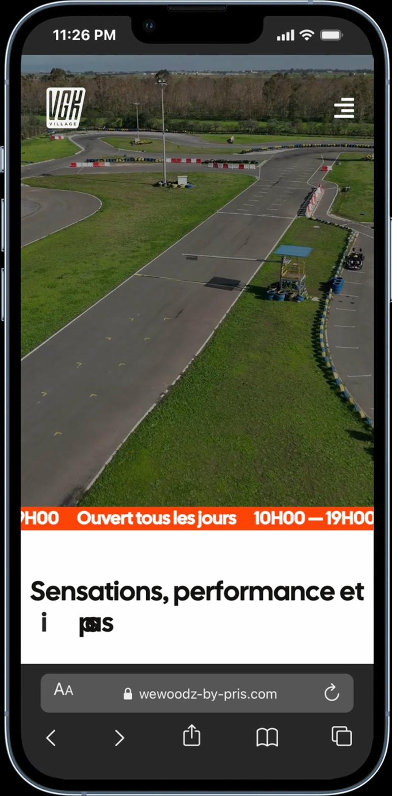
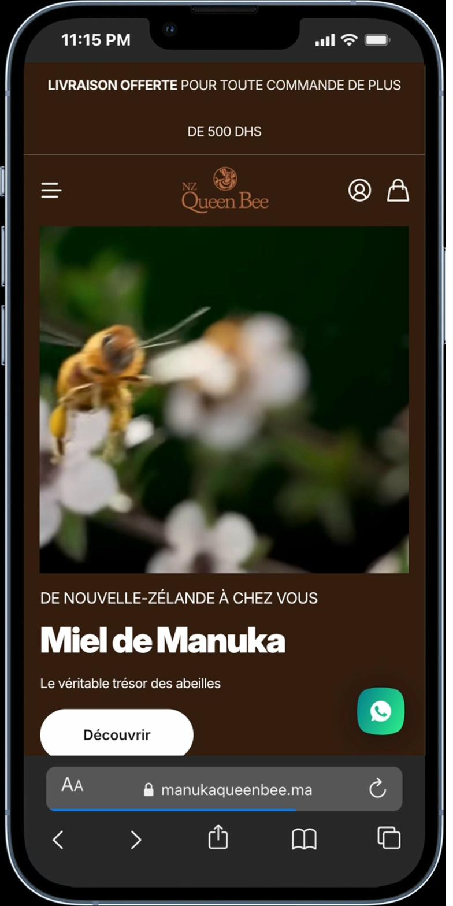
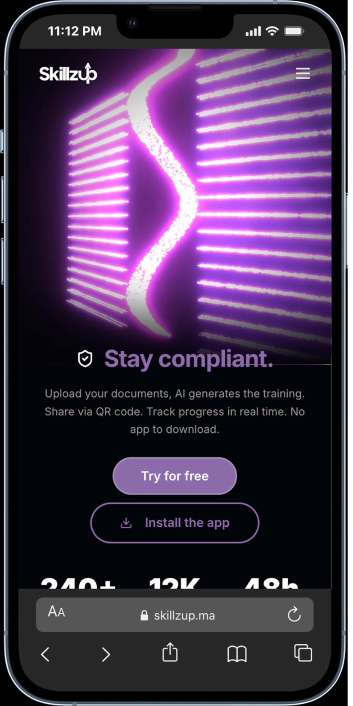

I design clear, intentional digital products that perform. 9+ years turning complex problems into simple, conversion-driven experiences — for startups, agencies, and growing brands.
I'm a UX/UI Designer with 9+ years of experience across graphic design, branding, and digital product design. I started in print and visual communication — which gave me a strong foundation in hierarchy, composition, and brand systems. Over time, I expanded into web design, UX research, and product thinking.
Today I design web and mobile experiences that solve real user problems and drive measurable results. I hold the Google UX Designer Professional Certificate and work across the full design process — from research and wireframes to high-fidelity UI and handoff.
Visual identity, print, and motion — 9+ years of craft across every format. From logos to full brand systems, I create visual languages that resonate and endure across every touchpoint.
Pixel-perfect interfaces built on systematic thinking. Landing pages, brand sites, and WordPress/Elementor builds optimized for conversion. Scalable component libraries and design systems included.
End-to-end product design from research and wireframes to high-fidelity UI and dev handoff. I uncover user pain points, map behavioral patterns, and architect flows that turn friction into conversion.
Landing page and product interface design for a SaaS platform that centralizes time tracking, tasks, AI-powered stock management, and real-time analytics for field teams.

UX / UI · Web DesignFull website redesign for a family-friendly karting center. Streamlined the booking flow, improved information hierarchy, and built a mobile-first responsive experience.

Product · Brand · E-CommercePremium product page redesign focused on trust, clarity, and proof. Built an education layer for UMF/MGO ratings and a guided product finder to boost conversions.

Product Design · SaaSEnd-to-end product design for a SaaS learning platform. Research-driven UX, user testing, and full UI design from concept to developer handoff.
Deep-dive into your business, users, and market. Stakeholder interviews, competitive analysis, and user research to define the real problem before a single pixel is touched.
Research & StrategySynthesize findings into actionable insights. User personas, journey maps, and information architecture that frames the solution space and aligns the team on what to build.
IA & User FlowsWireframes to high-fidelity prototypes. Iterative design sprints with continuous feedback loops and usability validation until the solution feels inevitable, not just functional.
UI & PrototypingPolished design specs, developer handoff, and post-launch optimization. Measuring impact and iterating based on real data — because shipping is where design meets reality.
Handoff & IterationThe stack evolves. Currently exploring Webflow, Framer, and Three.js for higher-fidelity prototypes.
Amine doesn't just design interfaces — he thinks through every detail of the user journey. He simplified our entire booking flow, and the results spoke for themselves. A designer who truly understands both users and business goals.
The ideas, tools, and shifts shaping how I think about design right now.
I believe the best designers will be the ones who learn to think with AI, not just use it.
I'm drawn to the blur between design and code — shipping is the new deliverable.
I think every pixel should earn its place — beautiful and measurable aren't opposites.
I'm obsessed with systems that bridge Figma and production — design-to-code without friction.
I believe the feeling of a product lives in the 200ms between tap and response.
I think accessibility isn't a checklist — it's a design philosophy that makes everything better.
Got a project in mind? I'm currently accepting new clients and always open to interesting collaborations.